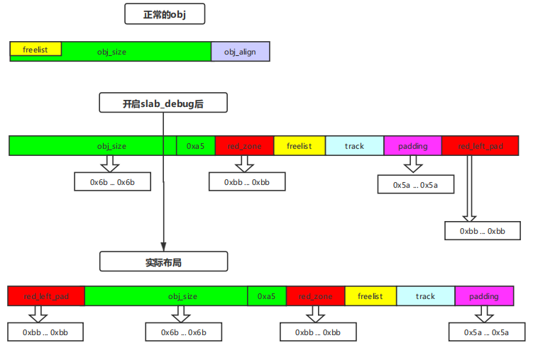

linux内核(5.4.81)---KASAN
KASAN 简述
-
KASAN是内核用于动态检测内存错误的工具, 简单来说, 数据区域可分为两种:可访问区域，不可访问区域(red_zone).KASAN存在影子内存(shadow memory), 他和正常内存的比例是1:8, 即1byte shadow memory可以代表8bytes 正常内存的可访问性.
-
128TB(内核正常内存) : 16TB(影子内存) — Documentation/x86/x86_64/mm.rst x86-64 内存布局显示如下:
ffffec0000000000 | -20 TB | fffffbffffffffff | 16 TB | KASAN shadow memory
-
具体规则(+: byte可访问, -: byte不可访问)
- 如果1byte shadow memory对应的8bytes 内存都可访问, 则*(shadow memory) == 0
[0] -> [+, +, +, +, +, +, +, +]- 如果1byte shadow memory对应的8bytes 内存都不可访问, 则*(shadow memory)为负数
[-1] -> [-, -, -, -, -, -, -, -]- 如果1byte shadow memory对应的8bytes 内存中有N bytes可访问, 则*(shadow memory) == N
if N = 3 [3] -> [+, +, +, -, -, -, -, -] -
实现原理
-
代码插桩: 利用编译器特性进行代码插桩, 当程序对内存进行读取或写入(load/store)时插入kasan检测代码
-
kasan检测代码: __asan_loadN(addr)/__asan_storeN(addr) (后面会对源码做详细分析), 主要功能是检测addr所在位置的N bytes内存是否可用.
-
源码分析
kasan检测入口
- 使用宏定义实现__asan_load/__asan_store, 关键函数为check_memory_region_inline
#define DEFINE_ASAN_LOAD_STORE(size) \
void __asan_load##size(unsigned long addr) \
{ \
check_memory_region_inline(addr, size, false, _RET_IP_);\
} \
EXPORT_SYMBOL(__asan_load##size); \
__alias(__asan_load##size) \
void __asan_load##size##_noabort(unsigned long); \
EXPORT_SYMBOL(__asan_load##size##_noabort); \
void __asan_store##size(unsigned long addr) \
{ \
check_memory_region_inline(addr, size, true, _RET_IP_); \
} \
EXPORT_SYMBOL(__asan_store##size); \
__alias(__asan_store##size) \
void __asan_store##size##_noabort(unsigned long); \
EXPORT_SYMBOL(__asan_store##size##_noabort)
check_memory_region_inline
-
当size==0时, 对内存不做读写操作, 正常返回
-
addr必须大于KASAN_SHADOW_START对应的正常地址, 即addr必须在shadow映射的界限内
-
memory_is_poisoned作为核心函数判断内存是否可用
static __always_inline bool check_memory_region_inline(unsigned long addr,
size_t size, bool write,
unsigned long ret_ip)
{
if (unlikely(size == 0))
return true;
if (unlikely((void *)addr <
kasan_shadow_to_mem((void *)KASAN_SHADOW_START))) {
kasan_report(addr, size, write, ret_ip);
return false;
}
if (likely(!memory_is_poisoned(addr, size)))
return true;
kasan_report(addr, size, write, ret_ip);
return false;
}
memory_is_poisoned
-
size 如果为常量, 则对1, 2-4-8, 16这三种情况分开讨论
-
size 不为常量进入memory_is_poisoned_n
static __always_inline bool memory_is_poisoned(unsigned long addr, size_t size)
{
// 判断size是否为常量
if (__builtin_constant_p(size)) {
switch (size) {
case 1:
return memory_is_poisoned_1(addr);
case 2:
case 4:
case 8:
return memory_is_poisoned_2_4_8(addr, size);
case 16:
return memory_is_poisoned_16(addr);
default:
BUILD_BUG();
}
}
return memory_is_poisoned_n(addr, size);
}
memory_is_poisoned_1
-
通过kasan_mem_to_shadow获得addr对应的shadow_addr, *((s8 *)shadow_addr)获得shadow_addr所对应的8bits内存值shadow_value
-
因为1byte shadow对应8bytes, 所以可以将 8bytes对齐的addr -> 8bytes对齐的addr+8 设为一个内存组, 对应1byte shadow, 此处addr&7获得addr在该组中的偏移量last_accessible_byte
-
比较偏移量与shadow_value(该组内可访问内存的byte 数), 如果last_accessible_byte <= shadow_value 显然addr可访问(当shadow_value==0时, 表示8bytes皆可访问)
static __always_inline bool memory_is_poisoned_1(unsigned long addr)
{
s8 shadow_value = *(s8 *)kasan_mem_to_shadow((void *)addr);
if (unlikely(shadow_value)) {
s8 last_accessible_byte = addr & KASAN_SHADOW_MASK;
return unlikely(last_accessible_byte >= shadow_value);
}
return false;
}
memory_is_poisoned_2_4_8
-
与memory_is_poisoned_1的区别在于此处多考虑了一种情况(待store/read内存跨越两个内存组)
-
对于跨越内存组的情况, 需要满足第一个内存组8bytes皆可访问(0), 第二个内存组shadow_value >= 组内偏移
-
如果不跨越内存, 只判断末尾地址是否可store/load 1byte 内存
static __always_inline bool memory_is_poisoned_2_4_8(unsigned long addr,
unsigned long size)
{
u8 *shadow_addr = (u8 *)kasan_mem_to_shadow((void *)addr);
/*
* Access crosses 8(shadow size)-byte boundary. Such access maps
* into 2 shadow bytes, so we need to check them both.
*/
if (unlikely(((addr + size - 1) & KASAN_SHADOW_MASK) < size - 1))
return *shadow_addr || memory_is_poisoned_1(addr + size - 1);
return memory_is_poisoned_1(addr + size - 1);
}
memory_is_poisoned_16
-
只有addr本身为8bytes 对齐时才会只跨越两个内存组, 否则跨越三个内存组
-
对于跨越三个内存组的情况, 需要满足前两个内存组内存皆可访问(16bit shadow_value == 0), 同时第三个内存组shadow_value >= 组内偏移
-
如果只跨越两个内存组, 只需要16bit shadow_value == 0即可
static __always_inline bool memory_is_poisoned_16(unsigned long addr)
{
u16 *shadow_addr = (u16 *)kasan_mem_to_shadow((void *)addr);
/* Unaligned 16-bytes access maps into 3 shadow bytes. */
if (unlikely(!IS_ALIGNED(addr, KASAN_SHADOW_SCALE_SIZE)))
return *shadow_addr || memory_is_poisoned_1(addr + 15);
return *shadow_addr;
}
memory_is_poisoned_n
-
memory_is_nonzero:
- 首先定位与待访问内存块对应的shadow_mem_block, 检测shadow_mem_block中的shadow_value是否全为0, 如果全为0, 则内存块可访问, 从memory_is_poisoned_n返回
- 如果shadow_value不全为0, 则找到第一个不为0的shadow_value对应的shadow_addr, return shadow_addr
-
得到memory_is_nonzero中返回的shadow_addr, 如果shadow_addr == last_shadow(末尾地址对应的shadow_addr) 则内存块可访问, 从memory_is_poisoned_n返回
-
否则判断末尾地址是否可store/load 1byte(比较末尾地址偏移与last_shadow的大小)
static __always_inline bool memory_is_poisoned_n(unsigned long addr,
size_t size)
{
unsigned long ret;
ret = memory_is_nonzero(kasan_mem_to_shadow((void *)addr),
kasan_mem_to_shadow((void *)addr + size - 1) + 1);
if (unlikely(ret)) {
unsigned long last_byte = addr + size - 1;
s8 *last_shadow = (s8 *)kasan_mem_to_shadow((void *)last_byte);
if (unlikely(ret != (unsigned long)last_shadow ||
((long)(last_byte & KASAN_SHADOW_MASK) >= *last_shadow)))
return true;
}
return false;
}
实例分析
buddy_kasan
kasan_alloc_pages: 标记shadow_mem为0, kasan_free_pages: 标记shadow_mem为不可访问
验证代码
- 编写kasan驱动, 使用alloc_pages调用buddy分配内存, 查看分配后以及释放后的shadow_mem内存(local_addr[0] = ‘\x10’; 对buddy分配的内存块做store操作, 会触发__asan_store1代码插桩)
long kasan_ioctl(struct file* filp, unsigned int cmd, unsigned long arg)
{
char *local_addr = NULL;
struct page *local_pg = alloc_pages(GFP_KERNEL, 2);
local_addr = page_address(local_pg);
local_addr[0] = '\x10';
__free_pages(local_pg, 2);
printk(KERN_DEBUG "[+] modules kasan debug\n");
return 0;
}
- ida反汇编代码(存在_asan_store1_noabort(v5), 猜测成立)
__int64 __fastcall kasan_ioctl(file *filp, unsigned int cmd, unsigned __int64 arg)
{
__int64 v3; // r13
__int64 v4; // r12
_BYTE *v5; // r12
_fentry__(filp, cmd, arg);
v3 = alloc_pages_current(3264LL, 2LL);
_asan_load8_noabort(&vmemmap_base);
v4 = v3 - vmemmap_base;
_asan_load8_noabort(&page_offset_base);
v5 = (_BYTE *)(page_offset_base + (v4 >> 6 << 12));
_asan_store1_noabort(v5);
*v5 = 0x10;
printk(&unk_1C0, v5);
_free_pages(v3, 2LL);
printk(&unk_200, 2LL);
return 0LL;
}
buddy_kasan 动态调试
-
在call __asan_store1处下断点, 查看rdi内容
gef➤ p $rdi $1 = 0xffff88805b034000 -
计算shadow_mem = addr » 3 + 0xdffffc0000000000, 所以0xffff88805b034000对应的shadow_mem: 0xffffed100b606800
static inline void *kasan_mem_to_shadow(const void *addr) { return (void *)((unsigned long)addr >> KASAN_SHADOW_SCALE_SHIFT) + KASAN_SHADOW_OFFSET; } -
查看shadow_mem内容(shadow_value=0x0, 表示内存块可访问)
gef➤ x/16xg 0xffffed100b606800 0xffffed100b606800: 0x0000000000000000 0x0000000000000000 0xffffed100b606810: 0x0000000000000000 0x0000000000000000 0xffffed100b606820: 0x0000000000000000 0x0000000000000000 0xffffed100b606830: 0x0000000000000000 0x0000000000000000 0xffffed100b606840: 0x0000000000000000 0x0000000000000000 0xffffed100b606850: 0x0000000000000000 0x0000000000000000 0xffffed100b606860: 0x0000000000000000 0x0000000000000000 0xffffed100b606870: 0x0000000000000000 0x0000000000000000 -
程序执行__free_pages, 释放buddy内存块, 再次查看shadow_mem(0xff=-1, 内存块不可访问)
gef➤ x/16xg 0xffffed100b606800 0xffffed100b606800: 0xffffffffffffffff 0xffffffffffffffff 0xffffed100b606810: 0xffffffffffffffff 0xffffffffffffffff 0xffffed100b606820: 0xffffffffffffffff 0xffffffffffffffff 0xffffed100b606830: 0xffffffffffffffff 0xffffffffffffffff 0xffffed100b606840: 0xffffffffffffffff 0xffffffffffffffff 0xffffed100b606850: 0xffffffffffffffff 0xffffffffffffffff 0xffffed100b606860: 0xffffffffffffffff 0xffffffffffffffff 0xffffed100b606870: 0xffffffffffffffff 0xffffffffffffffff -
计算shadow_mem边界(mem:shadow_mem=8:1), alloc_pages申请4页(0x1000 * 4)对应shadow_mem(0x1000 * 4/8=0x800), 发现0xff与0xfc的分界, 猜测成立
gef➤ x/16xg 0xffffed100b606800+0x800-0x10 0xffffed100b606ff0: 0xffffffffffffffff 0xffffffffffffffff 0xffffed100b607000: 0xfcfcfcfcfcfcfcfc 0xfcfcfcfcfcfcfcfc 0xffffed100b607010: 0xfcfcfcfcfcfcfcfc 0xfcfcfcfcfcfcfcfc 0xffffed100b607020: 0xfcfcfcfcfcfcfcfc 0xfcfcfcfcfcfcfcfc 0xffffed100b607030: 0xfcfcfcfcfcfcfcfc 0xfcfcfcfcfcfcfcfc 0xffffed100b607040: 0xfcfcfcfcfcfcfcfc 0xfcfcfcfcfcfcfcfc 0xffffed100b607050: 0xfcfcfcfcfcfcfcfc 0xfcfcfcfcfcfcfcfc 0xffffed100b607060: 0xfcfcfcfcfcfcfcfc 0xfcfcfcfcfcfcfcfc -
由上述调试结果可知, buddy_kasan可有效的检测内存越界以及uaf
slub_kasan
提到slub_kasan不得不提及slub_debug, slub_debug是slub早期的内存检测机制, 想详细的了解可以看一下这篇文章 slub_debug原理, 或者我之前写的一篇文章点击此处
在这里我简单的描述一下slub_debug的原理:
-
首先slub算法将page切割成一个一个的slub_obj, obj的布局大概是当obj空闲时, 复用头部空间用于存储free_list(指向下一个空闲obj)
-
当slub_debug开启后, slub_obj的布局将发生非常大的改变如下, 第一行为初始布局, 第二行为开启slub_debug后的布局

-
图中red_zone为右边界越界检测, red_left_pad为左边界越界检测, 这里对于red_left_pad着重说一下, 如果从第二幅图来看, 怎么也看不出左边界越界检测原理, 但是如果布局是第三幅图的话, 就非常明了了. 所以重点在于第二幅布局如何变成第三幅布局, slub的实现是, 每个obj在设计时仍然采用第二副布局, 但却在page开头开辟了一个red_left_pad, 这样就巧妙的完成了转换(至于为什么要经过这么一番转换, 只能说是历史遗留问题, 设计右边界越界检测时并没有考虑左边界越界)
-
然后再说一下slub_debug的局限性, slub_debug虽然和kasan一样设计了red_zone但是, slub_debug的安全检测只在alloc/free时启动, 即如果一个越界内存块永远不被释放, 则安全漏洞很难被发现(为了解决这个问题, slub设计了slub_info可以主动的去触发安全检测, 但是和kasan相比, 在检测范围上仍然很局限 — 只能检测slub内存问题, 同时还有一个非常重要的问题, slub_debug的red_zone是和填充数据位于同一内存块, 是可以被修改的, 有被劫持的风险)
-
关于slub_debug就说这么多, 继续研究slub_kasan(slub_kasan的布局在slub_debug上面再加一个)
slub_debug
-
kasan_poison_slab: 当创建kmem_cache时将page对应的shadow_mem标记为KASAN_KMALLOC_REDZONE, 表示内存不可访问
void kasan_poison_slab(struct page *page) { unsigned long i; for (i = 0; i < compound_nr(page); i++) page_kasan_tag_reset(page + i); kasan_poison_shadow(page_address(page), page_size(page), KASAN_KMALLOC_REDZONE); } -
__kasan_kmalloc: 当使用kmalloc(x) 申请内存后, 有一部分内存可用, 填充red_zone, 修改shadow_mem(__kasan_kmalloc和下面全局变量修改shadow_mem的原理类似, 可以滑到下面看看全局变量_kasan, 大致思路就是填充从obj_start+size到obj末尾内存为red_zone)
全局变量_kasan
__asan_register_globals: 根据 struct kasan_global为全局变量填充shadow_mem, __asan_unregister_globals实现为空
验证代码
-
目标全局变量为global_var
char global_var[34] = {'a', 'b', 'c', 'd'}; long kasan_ioctl(struct file* filp, unsigned int cmd, unsigned long arg) { global_var[0] = 'x'; global_var[34] = '*'; return 0; } -
ida反汇编代码
__int64 __fastcall kasan_ioctl(file *filp, unsigned int cmd, unsigned __int64 arg) { __int64 result; // rax _fentry__(filp, cmd, arg); global_var[0] = 120; _asan_store1_noabort(&global_var[34]); result = 0LL; global_var[34] = 42; return result; }
全局变量 动态调试
-
查看global_var内存(0xffffffffc000a000)与其对应的shadow_mem(0xfffffbfff8001400)发现, global_var存在34 bytes有效内存, 62 bytes为无效内存(red_zone)
gef➤ disassemble Dump of assembler code for function kasan_ioctl: => 0xffffffffc0008000 <+0>: data16 data16 data16 xchg ax,ax 0xffffffffc0008005 <+5>: push rbp 0xffffffffc0008006 <+6>: mov rdi,0xffffffffc000a022 0xffffffffc000800d <+13>: mov BYTE PTR [rip+0x1fec],0x78 # 0xffffffffc000a000 0xffffffffc0008014 <+20>: mov rbp,rsp 0xffffffffc0008017 <+23>: call 0xffffffff8145d790 <__asan_store1> 0xffffffffc000801c <+28>: xor eax,eax 0xffffffffc000801e <+30>: mov BYTE PTR [rip+0x1ffd],0x2a # 0xffffffffc000a022 0xffffffffc0008025 <+37>: pop rbp 0xffffffffc0008026 <+38>: ret End of assembler dump. gef➤ x/2xg 0xffffffffc000a000 0xffffffffc000a000: 0x0000000064636261 0x0000000000000000 gef➤ x/2xg 0xfffffbfff8001400 0xfffffbfff8001400: 0xfafafa0200000000 0x00000000fafafafa gef➤ -
进一步验证red_zone原理(ida显示驱动init_array段中存在指向__asan_register_globals的函数指针, 显然在驱动初始化阶段会调用该函数)
-
分析__asan_register_globals源码发现一个用来修饰全局变量的结构体(存放于.data段), 结合ida反汇编结果后填充结构体如下:
struct kasan_global { const void *beg=0xffffffffc000a000; /* Address of the beginning of the global variable. */ size_t size=0x22; /* Size of the global variable. */ size_t size_with_redzone=0x60; /* Size of the variable + size of the red zone. 32 bytes aligned */ const void *name="global_var"; const void *module_name="/home/povcfe/code/modules/kasan/kasan.c"; /* Name of the module where the global variable is declared. */ unsigned long has_dynamic_init=0; /* This needed for C++ */ #if KASAN_ABI_VERSION >= 4 struct kasan_source_location *location; #endif #if KASAN_ABI_VERSION >= 5 char *odr_indicator="/home/povcfe/code/modules/kasan/kasan.c"; #endif }; -
size_with_redzone=0x60, 动调时发现redzone为62(0x3e) bytes, 显然此处size_with_redzone不可能被直接使用, 继续分析源码
-
__asan_register_globals->register_global(特别关注aligned_size, 这里会解决上诉问题)
static void register_global(struct kasan_global *global) { size_t aligned_size = round_up(global->size, KASAN_SHADOW_SCALE_SIZE); // 设置有效内存对应的shadow_mem, 特别注意内存组内有效N byte不足8 bytes时, 需要设置shadow_value=N kasan_unpoison_shadow(global->beg, global->size); // 填充8 bytes对齐的redzone对应的shadow_mem为KASAN_GLOBAL_REDZONE kasan_poison_shadow(global->beg + aligned_size, global->size_with_redzone - aligned_size, KASAN_GLOBAL_REDZONE); } -
aligned_size
#define __round_mask(x, y) ((__typeof__(x))((y)-1)) #define round_up(x, y) ((((x)-1) | __round_mask(x, y))+1) -
算数太差, 直接用c实现了一下, aligned_size=0x28
#include <stdio.h> size_t __round_mask(size_t x, size_t y) { return ((__typeof__(x))((y)-1)); } size_t round_up(size_t x, size_t y) { return ((((x)-1) | __round_mask(x, y))+1); } int main() { size_t res = round_up(0x22, 7); printf("0x%lx", res); } -
故 global->size_with_redzone(0x60) = 0x28(0x22(size) + 0x6(red_zone)) + 0x38(red_zone), 即有效内存空间0x22 bytes, red_zone(0x6 + 0x38) bytes
栈变量_kasan
__kasan_unpoison_stack: 设置栈内有效内存shadow_mem
验证代码
-
目标栈变量 stack_var
long kasan_ioctl(struct file* filp, unsigned int cmd, unsigned long arg) { char stack_var[0x4] = {'a', 'b', 'c', 'd'}; stack_var[0x0] = 'x'; printk(KERN_DEBUG "[+] %s\n", stack_var); return 0; } -
ida反汇编代码(注意到0xF1(KASAN_STACK_LEFT), 0xF3(KASAN_STACK_RIGHT)字段, 猜测stack_kasan的shadow_mem填充代码是直接通过编译器插入源代码中的)
__int64 __fastcall kasan_ioctl(file *filp, unsigned int cmd, unsigned __int64 arg) { _DWORD *v3; // rbx _QWORD v5[4]; // [rsp-70h] [rbp-70h] BYREF int v6; // [rsp-50h] [rbp-50h] BYREF unsigned __int64 v7; // [rsp-18h] [rbp-18h] _fentry__(filp, cmd, arg); v3 = (_DWORD *)(((unsigned __int64)v5 >> 3) - 0x2000040000000000LL); v5[0] = 1102416563LL; v5[1] = "1 32 4 12 stack_var:15"; v5[2] = kasan_ioctl; *v3 = 0xF1F1F1F1; v3[1] = 0xF3F3F304; v7 = __readgsqword(0x28u); v6 = 0x64636278; printk(&unk_220, &v6); *(_QWORD *)v3 = 0LL; return 0LL; }
栈变量 动态调试
-
根据ida反汇编代码猜测栈变量存在左右边界(red_zone)且关于32 bytes对齐
-
stack_var(0xffff88805b02fcf0)与其shadow_mem(0xffffed100b605f9e)内容如下, 可知栈变量有效内存为4 bytes, red_zone_size: (8 * 3 + 8 - 4) + 8 * 3 = 52(左边界red_zone为32bytes, 右边界red_zone+size关于32 bytes对齐, 总red_zone大小与全局变量相同)
gef➤ x/8xg 0xffff88805b02fcf0-0x20 0xffff88805b02fcd0: 0x0000000041b58ab3 0xffffffffc000903c 0xffff88805b02fce0: 0xffffffffc00080e1 0xffff88805e404500 0xffff88805b02fcf0: 0xffff888064636261 0x0000000200000101 0xffff88805b02fd00: 0x000000000000004c 0x0000000000000000 gef➤ x/4xg 0xffffed100b605f9e-0x10 0xffffed100b605f8e: 0x0000000000000000 0xf1f1f1f100000000 0xffffed100b605f9e: 0x00000000f3f3f304 0x0000000000000000 gef➤ -
待函数返回(栈变量销毁时), 会将shadow_mem置0(见ida伪代码)
*(_QWORD *)v3 = 0LL; -
在kasan源码中没有找到填充red_zone的代码, 且栈变量左边界red_zone对应的内存处存放了栈变量信息, 函数信息. 所以猜测栈变量填充red_zone是在编译阶段实现的, 且左边界填充内容为用于描述栈的结构体